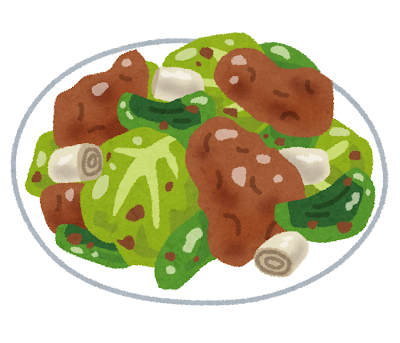
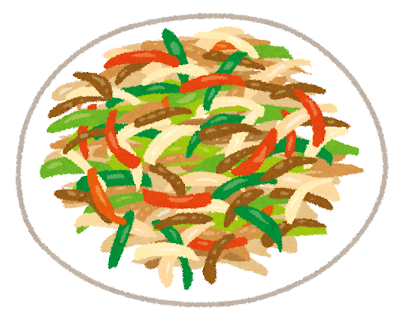
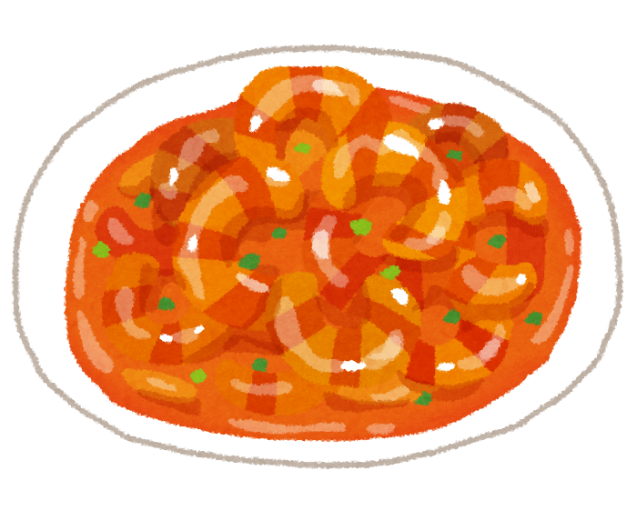

Mapo Tofu: The Fire of Sichuan

Birth of a Legend
Mapo Tofu (麻婆豆腐) was created in 1862 by Chen Mapo, a woman who ran a small restaurant near a bridge in Chengdu, Sichuan Province. Her face was pockmarked (ma means “pockmarked,” po means “old woman”), and her tofu dish became so famous that the restaurant was simply called “Chen Mapo Tofu.” The original restaurant still operates today, over 160 years later.
The dish exemplifies the Sichuan concept of mala (麻辣) — the distinctive combination of numbing Sichuan peppercorn (ma) and chili heat (la). This sensation is not just spicy — it is electric, tingling, and deeply addictive.
Sichuan: China s Spice Capital
Sichuan cuisine is one of China s Eight Great Traditions and is renowned for its bold, complex flavors. The province s humid climate historically led to heavy use of chili and peppercorn — believed to help the body cope with dampness. But Sichuan cooking is not just about heat; it encompasses seven flavors: sour, pungent, hot, sweet, bitter, aromatic, and salty.


The Dish
Silky soft tofu is simmered in a fiery sauce of doubanjiang (fermented chili bean paste), ground pork, garlic, ginger, Sichuan peppercorn, and chili oil. The genius is in the contrast: the gentle, almost custard-like tofu against the aggressive, complex sauce. Served bubbling hot over steamed rice, it is one of the most satisfying dishes in all of Chinese cuisine.
When the dish traveled to Japan, it was adapted to local tastes — slightly sweeter, less numbing — and became one of the most popular Chinese dishes in Japan, found in everything from home cooking to convenience store meals.
Mapo Tofu teaches that true flavor comes not from a single note but from the tension between opposites — soft and sharp, gentle and fierce, numbing and burning.
Ebi Chiri (エビチリ)
Ebi chiri is a Japanese Chinese dish of shrimp in a glossy, sweet-and-spicy chili sauce. Like mapo tofu, it gets its heat from doubanjiang, a fermented chili bean paste. Tomato ketchup adds sweetness and tang, while garlic, ginger, and scallions give the sauce its aroma. A little potato starch thickens the sauce so it clings to the shrimp.
